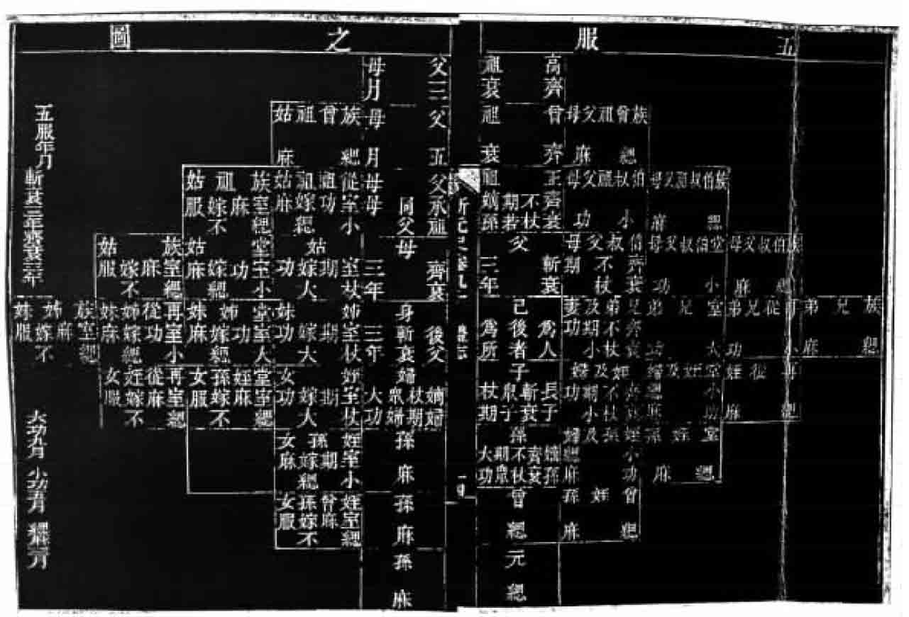
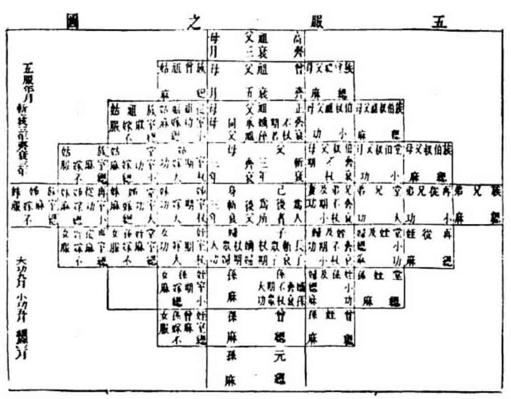
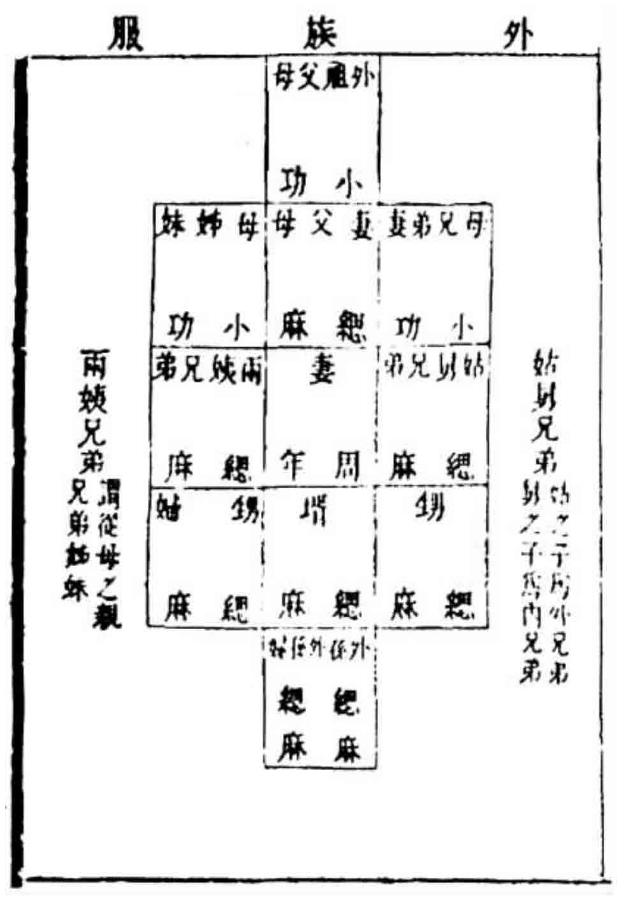
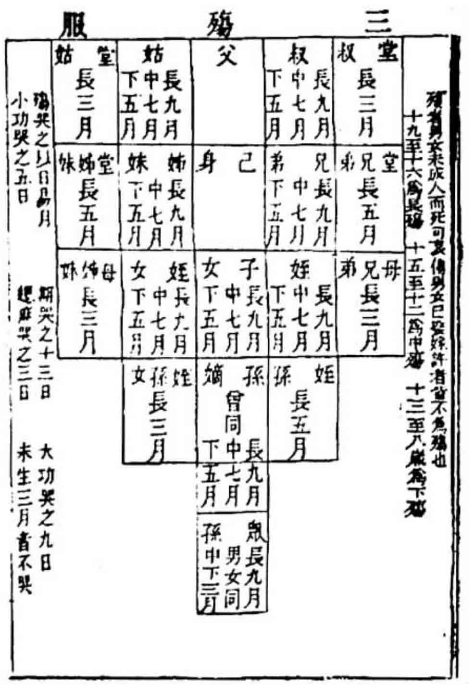
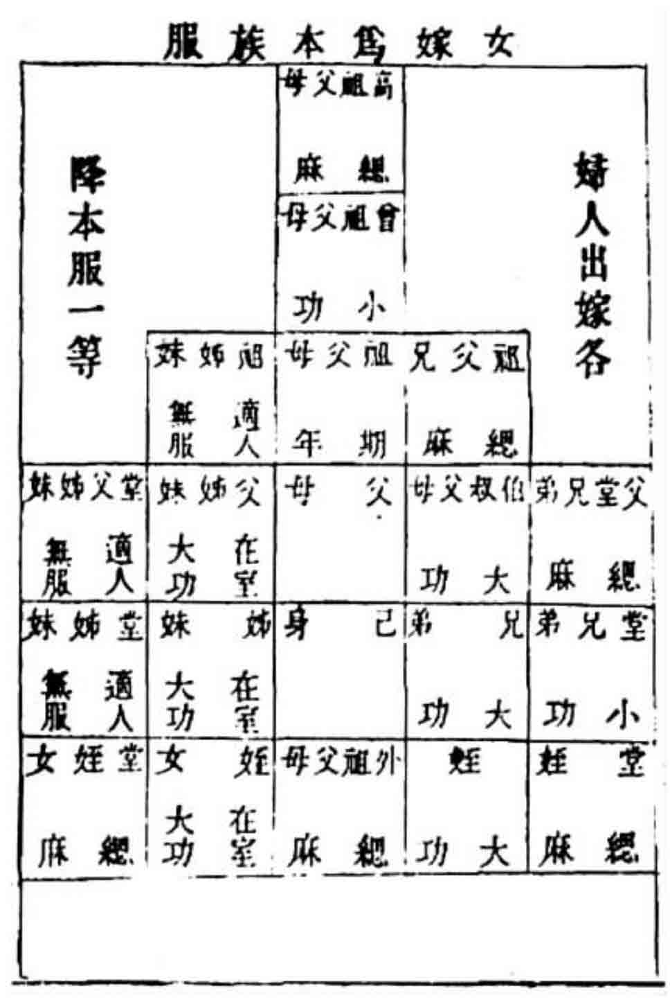
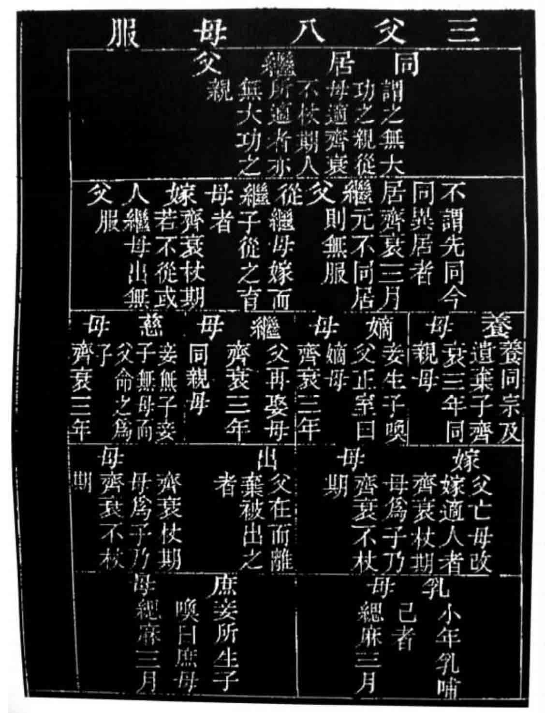
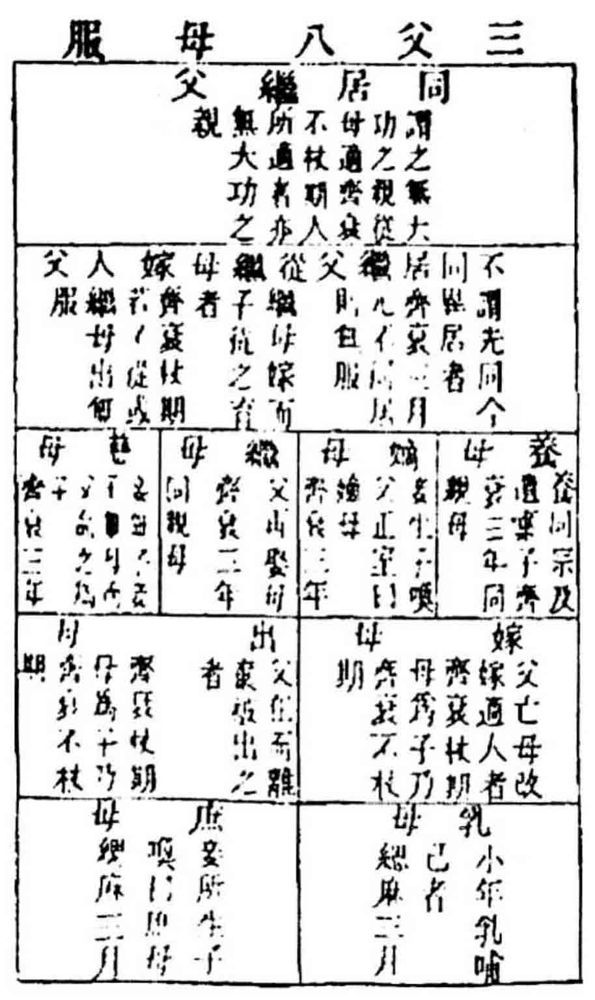
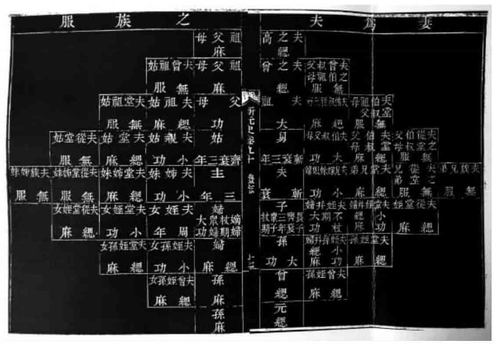
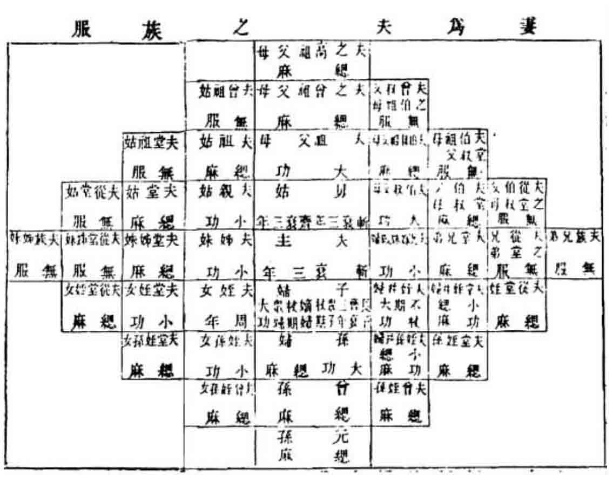

禮志十
册立皇后 册立皇太子 品官以下婚禮 禡牙祭旗鼓 大喪 品官丁憂 品官以下喪禮 品官以下墓田之制
册立皇后之禮。前期二日，儀鸞司設發册寶案于大明殿御座前稍西，設發寶案稍東，掌謁設香案于皇后殿前。設册案于殿内座榻前稍西，寶案稍東，設受册案于座榻上稍西，設受寶案于稍東。侍儀司設板位，册使副位于廷中，北面，册官位于右，寶官位于左，禮儀使位于册案前，主節位于太尉左。皇后殿廷亦如之。
至期大昕，引贊叙太尉以下于闕廷，各公服。侍儀使、禮儀使、引册使、引册、奉册、舉册、讀册、捧册官，由月華門入。侍儀使、禮儀使、引册副，引寶、奉寶、舉寶、讀寶、捧寶官，由日精門入。至露階下，依板位立。侍儀使捧牙牌入至寢殿前，跪報外辦。内侍入奏，出傳制曰「可」，侍儀使俛伏，興。皇帝出閣升輦，鳴鞭三。侍儀使引導從導皇帝入大明殿、陞御座，鳴鞭三。司晨報時雞唱畢，尚引引殿前班入起居位，起居、贊拜、舞蹈、山呼，如儀。宣贊唱曰「各恭事」。引贊引册使以下入就位，掌儀舍入引承奉班都知、侍儀使、禮儀使、主節、捧册、捧寶官，升自左階，由南東門入，至御座前，分左右相向立。掌儀贊曰「禮儀使稍前跪」，曰「太尉以下皆跪」。禮儀使跪奏請進發皇后册寶。掌儀贊曰「就拜」，曰「興」，曰「平身」，曰「太尉以下皆興」，曰「復位」。掌儀贊曰「内謁者稍前」，曰「搢笏」，曰「捧册寶跪進皇帝」，曰「以册寶授捧册寶官」，捧册寶官跪受，興。掌儀贊曰「主節官搢笏持節」，禮儀使引節導册寶由正門出，至露階，南向立。禮儀使稱有制，承奉班都知唱曰「太尉以下皆再拜」，通贊曰「鞠躬」，曰「拜」，曰「興」，曰「拜」，曰「興」，曰「平身」。禮儀使宣制曰「命太尉某等持節授皇后册寶」，通贊贊曰「鞠躬」，曰「拜」，曰「興」，曰「拜」，曰「興」，曰「平身」。降至露階下，依次就位。掌儀唱曰「以册寶置于案」，曰「出笏」，曰「復位」。方輿舁以行，樂作。侍儀使、禮儀使引太尉及册寶官。奉隨至皇后宫庭奠案，樂止。掌儀唱曰「捧册寶官稍前，搢笏」。捧册寶使、太尉以下奉隨由正階隮，至案前。掌儀贊曰「以册寶置于案」，曰「出笏」，曰「復位」。侍儀使稍前跪報外辦，内侍入啟，出傳旨曰「可」，侍儀使俛伏，興。
皇后出閣，詣褥位，太尉稱制遣臣某等恭授皇后册寶。内侍贊禮曰「跪」，掌儀贊曰「太尉以下皆跪」。内侍贊皇后曰「上香」，曰「上香」，曰「三上香」，曰「拜」，曰「興」，曰「拜」，曰「興」。掌儀贊曰「太尉以下皆興」。皇后陞殿，立于座榻前。承奉班都知唱曰「太尉以下進册寶」，掌儀唱曰「捧册寶官稍前，搢笏」。捧册寶由正門至殿内，掌儀贊曰「以册寶跪至于案」，曰「捧册寶官出笏」，「興」，「復位」，曰「太尉以下皆跪」，曰「舉册官興，至案前跪」，曰「搢笏，取册于匣，置于盤，對舉」，曰「讀册官興，至案前跪」，曰「讀册」。讀册官稱臣某謹讀册，讀畢，納册于匣。掌儀贊曰「出笏，舉寶官興，至案前跪，搢笏，取寶于盝，對舉」，曰「讀寶官興，至案前跪」，曰「讀寶」。讀寶官稱臣某謹讀寶。讀畢，納寶于盝。掌儀贊曰「出笏」，曰「太尉以下皆就拜」，曰「興」，曰「平身」。捧册寶官以册寶授太尉，太尉以授掌謁，掌謁以册寶置于受册寶案。掌儀唱曰「太尉以下跪」，曰「衆官皆跪」。太尉致祝辭曰：「册寶禮畢，伏願皇后與天同算」。司徒應曰：「如所祝」。就拜，興，平身。太尉進酒，樂作。皇后飲畢，樂止。禮儀使引節引主節由正門以出。侍儀使引太尉以下，由左門至階下，北面立。承奉班都知唱曰「太尉以下皆再拜」，通贊曰「鞠躬」，曰「拜」，曰「興」，曰「拜」，曰「興」，曰「平立」。侍儀使引太尉以下還詣皇帝御座前，跪奏曰「奉制授皇后册寶，謹以禮畢」。就拜，興，由左門出，降詣旁折位。
侍儀使引導從導皇后詣大明殿前謝恩，掌謁贊曰「拜」，曰「興」，曰「拜」，曰「興」。侍儀使分退，掌謁導皇后升御座。典引引丞相以下入起居位，起居贊拜如儀。侍儀使詣右丞相前請雙酒，雙引陞殿，至宇下褥位立。侍儀使分左右北向立，俟前行色曲將半，舞旋列定，通贊唱曰「分班」，樂作。侍儀使引右丞相由南東門入，宣徽使奉隨至御榻前，右丞相跪，宣徽使立于東南。曲終，右丞相祝贊曰：「册寶禮畢，臣等不勝慶抃，同上皇帝、皇后萬萬歲壽」。宣徽使應曰「如所祝」。右丞相俛伏，興，退詣進酒位。進酒、進表章禮物、贊拜、僧道賀獻、大宴殿上，並如元正儀。宴畢，鳴鞭三。侍儀使導駕，引進使導后。還寢殿，如來儀。凡后妃妊身將及月辰，則移居於外氈帳。若誕皇子，則賜百官以金銀采段，謂之撒荅海。
册立皇太子之禮。前期三日，右丞相率百僚至金玉局册寶案前，舍人贊曰「鞠躬」，曰「拜」，曰「興」，曰「拜」，曰「興」，曰「平身」，曰「班首稍前」，曰「跪」，曰「在位官皆跪」，曰「搢笏」，曰「上香」，曰「上香」，曰「三上香」，曰「出笏」，曰「就拜」，曰「興」，曰「拜」曰「興」，曰「拜」，曰「興」，曰「平身」。侍儀使、舍人分引羣臣。儀衛音樂導至中書省，正位安置。
前期二日，儀鸞司設發册案于大明殿御座西，發寶案于東。典寶官設香案于太子殿前階上，設册案于西，寶案于東；又設受册案于殿内座榻之西，受寶案于東。侍儀司設板位，太尉、册使副位于大明殿廷，太尉位居中，册官位于右，寶官位于左，禮儀使位于前。主節官位于太尉之左。太子殿廷亦如之，樂位布置亦如之。右丞相率百僚朝服，至中書省册寶案前，叙立定。舍人贊曰「鞠躬」，曰「拜」，曰「興」，曰「拜」，曰「興」，曰「平身」，曰「班首稍前」，曰「跪」，曰「搢笏」，曰「在位官皆跪」，曰「上香」，曰「上香」，曰「三上香」，曰「出笏」，曰「就拜」，曰「興」，曰「拜」，曰「興」，曰「拜」，曰「興」，曰「平身」。舍人分引羣臣，儀衛導從，音樂傘扇，導至闕前。控鶴奠案，方輿官舁之，由中道入崇天門，册使以下奉隨至露階下。方輿官置册案于西，寶案于東，分退立于兩廡。册使副北面，引册官、舉册官、讀册官、捧册官位于册案西，東向。引寶官、舉寶官、讀寶官、捧寶官位于寶案東，西向。掌儀舍人贊曰「捧册官稍前」，曰「搢笏」，曰「捧册」。又贊曰「捧寶官稍前」，曰「搢笏」，曰「捧寶」。侍儀使、引進使、引册官、引寶官前導。捧册寶官次之，册使副以下奉隨陞大明殿午階，由正門入，至進發册寶案前，册使副北面立。引册寶、引寶官、舉册官、舉寶官以下，分左右夾册寶案立。掌儀贊曰「以册寶置于案」，曰「出笏」，曰「復位」，侍儀使引奉册使以下由左門出，百辟趨退。
至期大昕，引贊引册使以下，皆公服，叙位于闕廷。侍儀使導從皇帝出閣，鳴鞭三，陞大明殿，登御座。尚引引殿前班入起居位，起居贊拜如儀，宣贊唱曰「各恭事」。引贊引册使以下入就位，掌儀舍人引承奉班都知，侍儀使，禮儀使［一］，主節郎、捧册捧寶官，升自左階，由左門入，至御座前，分左右立，掌儀贊曰「禮儀使稍前」，曰「跪」，曰「衆官皆跪」。禮儀使奉請發皇太子册寶，掌儀唱曰「就拜」，曰「興」，曰「平身」，曰「衆官皆興」，曰「復位」，曰「内謁者稍前」，曰「搢笏」，曰「捧册寶跪進皇帝」，曰「以册寶授捧册寶官」，捧册寶官跪受，興。掌儀贊曰「主節郎搢笏持節」，禮儀使引節導册寶由正門以出，至露階南向立。禮儀使稱「有制」，承奉班都知唱曰「太尉以下皆再拜」，掌儀贊曰「鞠躬」，曰「拜」，曰「興」，曰「拜」，曰「興」，曰「平身」。禮儀使宣制曰「上命太尉等持節授皇太子册寶」，掌儀贊曰「鞠躬」，曰「拜」，曰「興」，曰「拜」，曰「興」，曰「平身」。禮儀使引節導册寶，降至露階下，依次就位。掌儀贊曰「以册寶置于案」，曰「出笏」，曰「復位」。方輿舁以行，樂作。侍儀使、禮儀使、主節前導，册使以下奉隨由正門出。至闕前，方輿奠案，控鶴舁以行。至皇太子殿廷，控鶴奠案，方輿舁以行。入至露階下奠案，方輿退，樂止。册使以下以次立，掌儀贊曰「捧册寶官稍前，搢笏，捧册寶」。侍儀使引節，主節導册寶以行，册使以下由正階隮，節立于香案之西。掌儀贊曰「捧册寶官跪，以册寶置于案」，曰「出笏」，曰「興」，曰「就位」。右庶子跪報外備，内侍入啟，出傳旨曰「可」，右庶子俛伏，興。
皇太子出閤，立于香案前，掌儀贊曰「皇太子跪」，曰「上香」，曰「上香」，曰「三上香」，曰「拜」，曰「興」，曰「拜」，曰「興」。太尉前稱「制遣臣某等恭授皇太子册寶」，復位。掌儀贊曰「皇太子拜」，曰「興」，曰「拜」，曰「興」。請皇太子詣褥位，南向立。曰「皇太子跪」，曰「諸執事官皆跪」，曰「舉册官興，至案前」，曰「跪」，曰「讀册」。讀畢，曰「納册于匣」，曰「出笏」。掌儀唱曰「舉寶官興，至案前」，曰「跪」，曰「讀寶」。讀畢，曰「納寶于盝」，曰「出笏」，曰「舉册寶官、讀册寶官皆興」，復位。掌儀贊曰「太尉進授册寶」，侍儀使引太尉、司徒至册寶案前，搢笏，以册寶跪進。皇太子恭受，以授左右庶子，左右庶子搢笏跪受。掌儀贊曰「皇太子興，册使以下皆興」，右庶子捧册，左庶子捧寶，導皇太子入殿。右庶子奠册于授册案，左庶子奠寶于受寶案。引節引主節立于殿西北，引贊引太尉以下降階復位，北向立。承奉班都知唱曰「太尉以下皆再拜」，掌儀贊曰「鞠躬」，曰「拜」，曰「興」，曰「拜」，曰「興」，曰「平身」。樂作，侍儀使詣太尉前請進酒，太尉入至殿内，進酒畢，降復位，樂止。
侍儀使、禮儀使、主節導太尉以下還詣大明殿御座前，跪奏曰：「奉制授皇太子册寶，謹以禮畢」。俛伏，興，降詣位。侍儀使、左右庶子導皇太子詣大明殿御座前謝恩，右庶子贊曰「拜」，曰「興」，曰「拜」，曰「興」。進酒。又贊曰「拜」，曰「興」，曰「拜」，曰「興」。降殿，還府。侍儀使詣右丞相前請進酒，雙引陞殿，至宇下褥位立，侍儀使分左右，北向立。俟前行色曲將半，舞旋列定。通贊唱曰「分班」，樂作。侍儀使、右丞相由南東門入，宣徽使奉隨至御榻前。右丞相跪，宣徽使立于東南。曲終，右丞相祝贊曰：「皇太子册寶禮畢，臣等不勝慶抃，同上皇帝、皇后萬萬歲壽。」宣徽使應曰：「如所祝。」右丞相俛伏，興，退詣進酒位。進酒、進表章禮物、贊拜［二］，如元正儀。駕興，鳴鞭三。侍儀使導駕還寢殿，如來儀。
皇太子還府，陞殿。典引引羣臣入就起居位，通班自班西行至中道，唱曰「具官某以下起居」，典引贊曰「鞠躬」，曰「平身」。進就拜位，宣贊唱曰「拜」，通贊贊曰「鞠躬」，曰「拜」，曰「興」，曰「拜」，曰「興」，曰「平身」。侍儀使詣班首前請進酒，雙引由左階至殿宇下褥位立，侍儀分左右，北向立。俟前行色曲將半，舞旋列定，通贊唱曰「分班」。班首入自左門，右庶子隨至座前。班首跪，右庶子立于東南。俟曲終，班首致祝詞曰［三］：「册寶禮畢，願上殿下千秋之壽。」右庶子應曰「如所祝」，班首俛伏，興，退至進酒位，搢笏，捧觴，北向立，右庶子退復位。俟舞旋至露階，樂舞至第四拍，班首進酒。宣贊唱曰「文武百僚皆再拜」，通贊贊曰「鞠躬」，曰「拜」，曰「興」，曰「拜」，曰「興」，曰「平身」。班首自東門出，復位，樂止。通贊唱曰「合班」。中書押進箋及禮物案至横階下，進讀箋官由左階隮，進讀禮物官至階下。俟進讀箋官至宇下，先讀箋目，次讀箋。讀畢，俛伏，興，降至階下。進讀禮物官升階，至宇下，跪讀禮物狀畢，俛伏，興，退，同讀箋官至横階，隨箋案西行，至右廡下，禮物案東行，至左廡下，各付所司。宣贊唱曰「拜」，通贊贊曰「鞠躬」，曰「拜」，曰「興」，曰「拜」，曰「興」，曰「平立」。右庶子導皇太子還閤。
品官以下婚姻之禮。至元八年，禮部議准，條件凡七：
一曰議婚。身及主婚者無期以上喪服，及可成婚。先使媒氏通言，女氏許之，然後納采。
二曰納采。係今之下定也。主人具書，夙興，奉以告祠堂。人之大倫，於禮爲重，宜告廟而後行，示不忘祖也。使子弟爲使者，如女氏，主人出見，使者奉書以告於祠堂，出以復書授使者，遂禮之。使者復命，婚主告於祠堂，或婚主親往納采者聽。
三曰納幣。係今之下財也。具書遣使如女氏，授書，女氏復書，禮賓使者覆命，如納采儀。已定筵會，以男家爲主會，請女氏諸親爲客。先入坐，男家至門外陳列幣物，令媒氏通報女氏主人，出門迎接，相揖。俟女氏先入，男家以次隨幣而入，舉酒請納幣。飲酒受幣訖，女氏主人回禮。婚家飲酒畢，主人待客如常禮，許婚氏女子出見。
四曰親迎。前期一日，女氏使人張陳婚室。質明，壻家設位於室中，女家設次於外，主人告於祠堂，遂醮其子，而命之親迎。壻出乘馬至女家，俟於次。女家主人告於祠堂，遂醮其女而命之。主人出迎，壻入，納雁。姻家奉女登車，壻乘馬先行歸。車至，導婦以入。壻、婦交拜，就飲食畢，壻出復入，脱服獨出，主人禮贊。
五曰婦見舅姑。明日夙興，婦見舅姑，次見諸尊長者。若婦家，則饋於舅姑，舅姑享之。
六曰廟見。三日，主人以婦見於祠堂。
七曰壻見婦之父母。受壻拜禮。次見婦黨，諸婦親家禮壻如常儀。若召贅之家，仍依時俗現行之禮。
蒙古軍禮之僅見者。憲宗二年七月，命皇弟忽必烈征大理，諸王禡牙西行。七年六月，謁太祖行宫，祭旗鼓。八年十一月，令皇弟忽必烈禡牙於開平西北。其禡牙之禮與祭旗鼓之禮均未聞。遼景宗將伐宋，命巫者祠兵神及祭旗鼓。蓋遼、金舊制，蒙古襲而用之。
凡帝后有疾度危殆，不可愈，則移居於外氈帳房。有不諱，則就殯殮其中。葬後，每日用羊二次，燒飯以爲祭，至四十九日而後已。其帳房則以頒賜近臣云。
宫車晏駕。棺用香楠木，中分爲二，刳肖人形，其廣狹長短，僅至容身而已。殮用貉皮襖、皮帽，其靴韈、繫腰、盒鉢，俱用白粉皮爲之。殉以金壺瓶二，盞一，椀碟匙筯各一。殮訖，用黄金爲箍四條以束之。乘輿用白氈青緣納失失爲簾，覆棺亦以納失失爲之。前行，用蒙古巫媪一人，衣新衣，騎馬，牽馬一匹，以黄金飾鞍轡，籠以納失失，謂之金靈馬。日三次，用羊奠祭。至所葬陵寢，取開穴時所起之土成塊，依次排列之。棺既下，復依次掩覆之。有餘土，則遠置他所。送葬官三員，居五里外，日一次，燒飯祭之［四］，三年然後返。
品官丁憂。蒙古及色目人不行三年之喪，漢人、南人則行之。大德八年，詔：「三年之喪，古今通制。除應當怯薛人員、征戍軍官外，其餘官吏，父母喪亡，丁憂終制，方許叙仕。奪情起復者不拘此例。」九年，中書省奏：「聽從官吏丁憂。」至大四年，詔：「官吏並許終制，以厚風俗。朝廷奪情起復，蒙古、色目人、管軍官，不拘此例。」延祐五年，監察御史許有壬言：「聖朝以孝治天下，考稽典禮，除蒙古、色目各從本俗，其餘居官著爲丁憂之制，將以美教化、厚人倫，爲治之要道也。所謂奪情起復者，蓋有道德可以範世，謀猷可以經國，天心簡畀，人望素服；又邊臣、宿將，可任重寄。似此必用之人，謂之起復，誰曰不然？其或碌碌凡庸，如馮翼霄，才無過於常人，行每乖於清議，徒以諛佞憸邪，亦復冒膺起復，實玷風教，宜明白奏聞。除上所知識必用之人，取自聖裁，其餘人員，並遵舊制。」時不肖者多假借起復，以圖榮進，故有壬言之。寧國萬户府言：「本府知事孫顯，父母俱没，係遷轉之員，與軍官不同，理合丁憂。」監察御史言：「切恐其餘管軍衙門首領官，亦有似此托爲軍職，不得丁憂者，傷風敗俗，深爲不便。宜徧行照會，如有違犯，斷罪降叙。」刑部議從之。至正初，監察御史烏古孫良楨，以國俗父母死無憂制，又父死則妻從母，兄弟死則收其妻，上言：「綱常皆出於天而不可變。議法之吏乃言國人不拘此例，諸國人各從本俗。是漢人、南人當守綱常，國人、諸國人不必守綱常也。名曰優之，實則陷之；外若尊之，内寔侮之。推其本心，所以待國人者，不若漢人、南人之厚也。請下禮官、有司，及右科進士在朝者會議。自天子至於庶人，皆從禮制，以成列聖未遑之典，明萬世不易之道。」奏上，不報。
品官以下喪禮。至元七年，中書省議：「民間殯葬，除紙錢外，紙糊房子、金錢、人馬，并綵帛、衣服、帳幕等物，應截日盡行禁斷。」從之。二十一年，定品官遇有婚喪，止依品秩，合得儀從送迎外，禁斷。無官百姓人等，不得僭越。至大三年，皇太子令旨，禁教坊司樂人送殯。延祐元年，江南行台御史王奉訓言：「伏以父母之喪三年，天下之通喪也。死斂葬祭，莫不有禮。《禮》曰：披髮『徒跣』，『居於倚廬』，『寢苫枕塊』，『哭泣無時［五］』。『歠粥，朝一溢米，夕一溢米。』又曰：『始死，充充如有窮［六］；既殯，瞿瞿如有求而弗得；既葬，皇皇如有望而弗至。』經曰：『食旨不甘，聞樂不樂。』此孝子哀感之情。既斂既葬，祭以其時。期而小祥，又期大祥，三年禫祭。『霜露既降』，『春雨既濡』，『悽愴』『怵惕』，『如將見之』。此孝子終身所不忘，豈拘於三年哉？去古日遠，風俗日薄。近年以來，江南尤甚。父母之喪，小斂未畢，茹葷飲酒，略無顧忌。至於送殯，管絃歌舞，導引靈柩，焚葬之際，張筵排晏，不醉不已。泣血未乾，享樂如此。昊天之報，其安在哉！興言及此。誠可哀憫。請今後除蒙古、色目合從本俗，其餘人等居喪送殯，不得飲食動樂。違者諸人首告得實，示衆斷罪。所在官司申禁不禁者，罪亦如之。不惟人子有所懲勸，抑亦風俗少復淳古。」中書省議從之。
延祐二年，定喪服各從本俗。禮部議：「方今喪服未有定制，除蒙古、色目人各從本俗，其餘依鄉俗，以麻布爲之。江淮習俗，有戴布幞頭、布袍爲禮者，禁之。」
喪禮圖









品官以下墓田之制。一品，地九十步。二品，八十步。三品，七十步。四品，六十步。五品，五十步。六品，四十步。七品以下，二十步。庶人，九步。庶人墓田，四面距心各九步，四圍相距共十八步。至元八年，禁墓上不得造房舍。
至大元年，袁州路録事司照略案牘涂全周呈：「江南流俗以侈靡爲孝。凡有喪葬，大其棺槨，厚其衣衾，廣其宅兆，備存珍寶之器物。亦有將寶鈔藉尸斂利，習以成風。非惟顯失古制，於法似亦未合。每見厚葬之家，不發掘於不肖子孫，則開鑿於强竊盜賊，令死者暴露骸骨，良可痛憫。擬請嚴爲禁治，今後喪家，除衣衾棺槨依禮舉葬外，不許輒用金銀、寶玉、器玩裝殮。違者以不孝論。」中書省議從之。泰定二年，山東道廉訪使許師敬請頒族葬制，禁用陰陽相地邪説。時同知密州事楊仲益撰《周制國民族葬昭穆圖》，師敬韙其言，奏請頒行天下焉。
【校勘記】
［一］「禮儀使」，原作「侍儀使」，據《元史》卷六七志第十八《禮樂一》改。
［二］「贊拜」，原作「贊曰」，據《元史》卷六七志第十八《禮樂一》改。
［三］「祝詞」，原作「祝祠」，據《元史》卷六七志第十八《禮樂一》改。
［四］「燒飯」，原作「澆飯」，據《元史》卷七七志第二十七《祭祀六》改。
［五］「無時」，原作「於時」，據《禮記·問喪》改。
［六］「充充如有窮」，「充充」二字原脱，據《禮記·檀弓上》補。
本章完!